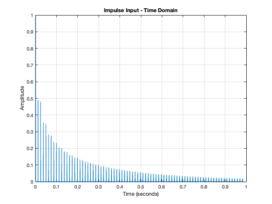

Contents
clc; close all; clear; % Setting up required functions u = @(n)double(n>=0); del = @(n)double(n==0); % Question: Transfer Function % Transfer Function = 1/(1-0.5Kz^(-N)-0.5Kz^(-N-1)) % How many poles does it have? N % Question: Difference Equation % Difference Equation: y[n] = x[n] + 0.5*K*y[n-N] + 0.5*K*y[n-N-1] % Question: What should a and b be for filter(b,a,x) % b = 1; % a = [1,zeros(1,N-2),-0.5*K,-0.5*K]; % Question: With Fs = 8000 what should N+L be if we want the output signal to be 1 second in duration? % N+L=8000 N = 150; K = 0.98; L = 8000-N; b = 1; a = [1,zeros(1,N-2),-0.5*K,-0.5*K]; Fs = 8000; x = [randn(1,N) zeros(1,L)]; y = filter(b,a,x); t = (0:length(y)-1)/Fs; soundsc(y,Fs); % Does it sound like a plucked string? Yes it does % Does it look almost periodic? Yes % Does it sound exactly the same each time? It is random but it sounds % generally the same. figure; plot(t,y); xlim([0,1]); grid on; xlabel("Time (seconds)"); ylabel("Amplitude"); title("Plucked String Signal (Time Domain) K = 0.98"); [H,w] = freqz(b,a,2^16); figure; plot(w/pi*Fs/2,abs(H)); xlabel("Frequency (Hz)"); ylabel("Amplitude"); title("Plucked String Signal (Frequency Domain) K = 0.98 - Amplitude"); grid on;
Question: How could you have predicted that the output signal of the Karplus-Strong syplot is nearly periodic?
The comb link structure, you can tell it is periodic and it is continously decresaing in magnitude.
Run the syplot again, using different values of K
% K = 0.9 N = 100; K = 0.90; L = 8000-N; b = 1; a = [1,zeros(1,N-2),-0.5*K,-0.5*K]; Fs = 8000; x = [randn(1,N) zeros(1,L)]; y = filter(b,a,x); t = (0:length(y)-1)/Fs; soundsc(y,Fs); figure; plot(t,y); xlim([0,1]); grid on; xlabel("Time (seconds)"); ylabel("Amplitude"); title("Plucked String Signal (Time Domain) K = 0.9"); [H,w] = freqz(b,a,2^16); figure; plot(w/pi*Fs/2,abs(H)); xlabel("Frequency (Hz)"); ylabel("Amplitude"); title("Plucked String Signal (Frequency Domain) K = 0.9 - Amplitude"); grid on; % K = 0.60 N = 100; K = 0.60; L = 8000-N; b = 1; a = [1,zeros(1,N-2),-0.5*K,-0.5*K]; Fs = 8000; x = [randn(1,N) zeros(1,L)]; y = filter(b,a,x); t = (0:length(y)-1)/Fs; soundsc(y,Fs); figure; plot(t,y); xlim([0,1]); grid on; xlabel("Time (seconds)"); ylabel("Amplitude"); title("Plucked String Signal (Time Domain) K = 0.6"); [H,w] = freqz(b,a,2^16); figure; plot(w/pi*Fs/2,abs(H)); xlabel("Frequency (Hz)"); ylabel("Amplitude"); title("Plucked String Signal (Frequency Domain) K = 0.6 - Amplitude"); grid on; % K = 0.25 N = 100; K = 0.25; L = 8000-N; b = 1; a = [1,zeros(1,N-2),-0.5*K,-0.5*K]; Fs = 8000; x = [randn(1,N) zeros(1,L)]; y = filter(b,a,x); t = (0:length(y)-1)/Fs; soundsc(y,Fs); figure; plot(t,y); xlim([0,1]); grid on; xlabel("Time (seconds)"); ylabel("Amplitude"); title("Plucked String Signal (Time Domain) K = 0.25"); [H,w] = freqz(b,a,2^16); figure; plot(w/pi*Fs/2,abs(H)); xlabel("Frequency (Hz)"); ylabel("Amplitude"); title("Plucked String Signal (Frequency Domain) K = 0.25 - Amplitude"); grid on;
What happens when K change?
Starting with the signal in the time domain, as K decreases and as shown in the graphs above, the amplitude decreases. Additionally, the sustain of the signal seem to decrease. As for the frequency domain, the graph seem to flatten as K decrease.
Run the syplot again, using different values of N
% N = 50 N = 50; K = 0.98; L = 8000-N; b = 1; a = [1,zeros(1,N-2),-0.5*K,-0.5*K]; Fs = 8000; x = [randn(1,N) zeros(1,L)]; y = filter(b,a,x); t = (0:length(y)-1)/Fs; soundsc(y,Fs); figure; plot(t,y); xlim([0,1]); grid on; xlabel("Time (seconds)"); ylabel("Amplitude"); title("Plucked String Signal (Time Domain) N = 50"); [H,w] = freqz(b,a,2^16); figure; plot(w/pi*Fs/2,abs(H)); xlabel("Frequency (Hz)"); ylabel("Amplitude"); title("Plucked String Signal (Frequency Domain) N = 50 - Amplitude"); grid on; % N = 200 N = 200; K = 0.98; L = 8000-N; b = 1; a = [1,zeros(1,N-2),-0.5*K,-0.5*K]; Fs = 8000; x = [randn(1,N) zeros(1,L)]; y = filter(b,a,x); t = (0:length(y)-1)/Fs; soundsc(y,Fs); figure; plot(t,y); xlim([0,1]); grid on; xlabel("Time (seconds)"); ylabel("Amplitude"); title("Plucked String Signal (Time Domain) N = 200"); [H,w] = freqz(b,a,2^16); figure; plot(w/pi*Fs/2,abs(H)); xlabel("Frequency (Hz)"); ylabel("Amplitude"); title("Plucked String Signal (Frequency Domain) N = 200 - Amplitude"); grid on; % N = 500 N = 500; K = 0.98; L = 8000-N; b = 1; a = [1,zeros(1,N-2),-0.5*K,-0.5*K]; Fs = 8000; x = [randn(1,N) zeros(1,L)]; y = filter(b,a,x); t = (0:length(y)-1)/Fs; soundsc(y,Fs); figure; plot(t,y); xlim([0,1]); grid on; xlabel("Time (seconds)"); ylabel("Amplitude"); title("Plucked String Signal (Time Domain) N = 500"); [H,w] = freqz(b,a,2^16); figure; plot(w/pi*Fs/2,abs(H)); xlabel("Frequency (Hz)"); ylabel("Amplitude"); title("Plucked String Signal (Frequency Domain) N = 500 - Amplitude"); grid on;

What happens when N change?
Starting with the signal in the time domain, as N increase, the signal seem to decay slower. As for the frequency domain graph, when N increases, the signal seem to have its energy spread across braoder ranges compared to it being concentrated within a smaller number of frequencies at lower K value.
N = 100; K = 0.98; L = 8000-N; b = 1; a = [1,zeros(1,N-2),-0.5*K,-0.5*K]; Fs = 8000; x = [1 zeros(1,L)]; y = filter(b,a,x); t = (0:length(y)-1)/Fs; soundsc(y,Fs); figure; plot(t,y); xlim([0,1]); grid on; xlabel("Time (seconds)"); ylabel("Amplitude"); title("Impulse Input - Time Domain"); [H,w] = freqz(b,a,2^16); figure; plot(w/pi*Fs/2,abs(H)); xlabel("Frequency (Hz)"); ylabel("Amplitude"); title("Impulse Input - Frequency Domain"); grid on; % How does this effect the sound quality of the output signal? % Sounds like a plucksed sound but of a much higher (unnatural) quality % Does it sound more or less natural? % It sounds less natural % Take a close look at the output signal, what do you notice? % It seems very clean and less noisy b
b =
1
 Comb Filter
% Transfer Function = 1/(1-Kz^(-N)) % Difference Equation: y[n] = k*y[n-N] + x[n] N = 100; K = 0.98; L = 8000-N; b = 1; a = [1,zeros(1,N-1),-K]; Fs = 8000; x = [randn(1,N) zeros(1,L)]; y = filter(b,a,x); t = (0:length(y)-1)/Fs; soundsc(y,Fs); figure; plot(t,y); xlim([0,1]); grid on; xlabel("Time (seconds)"); ylabel("Amplitude"); title("Plucked String Signal - Comb Filter (Time Domain)"); [H,w] = freqz(b,a,2^16); figure; plot(w/pi*Fs/2,abs(H)); xlabel("Frequency (Hz)"); ylabel("Amplitude"); title("Plucked String Signal - Comb Filter (Frequency Domain)"); grid on; % How does removing the lowpass lter e ect the sound and the frequency response of the system? % The pluck now sounds more metalic with frequencies of higher aplitudes, % so it gives off this comb shape. The freuqnecy response has higher % amplitudes for higher frequencies than it did before. % Why is this system called a comb filter? % The response has nothces at equal intervals like a comb.